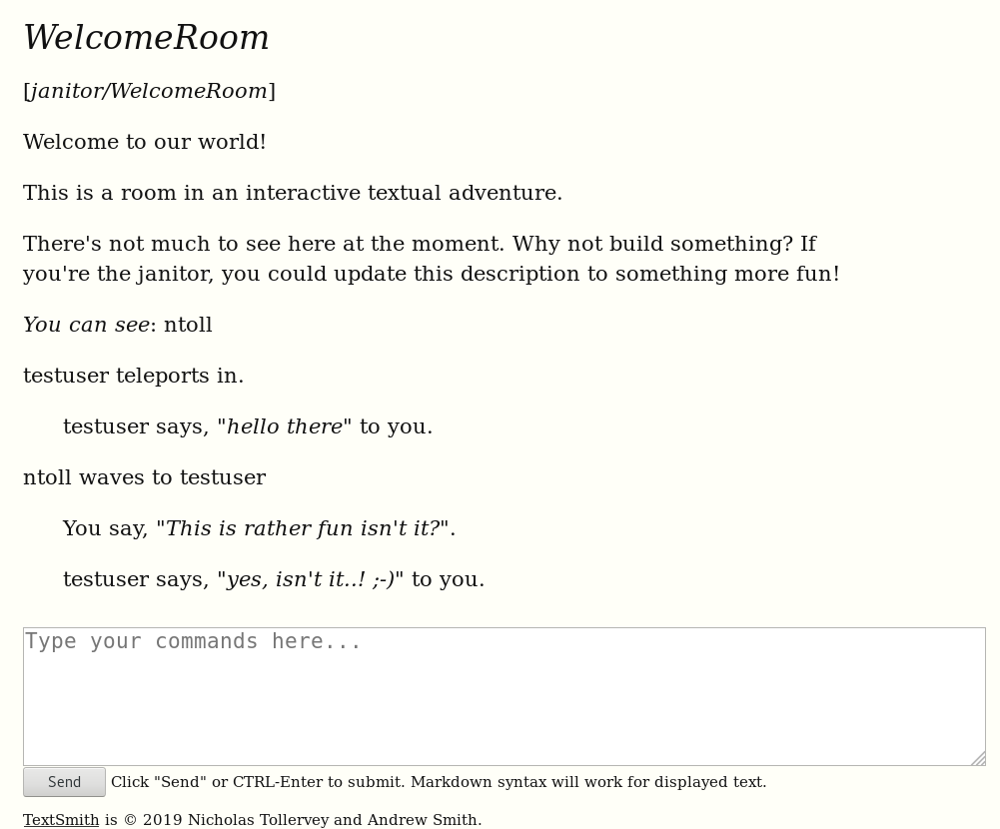

PyWeek Retrospective
PyWeek is a simple idea: write a game, using the Python programming language, from scratch, on a given theme, within a week. Take part as either an individual or a member of a team entry. At the end of the week play, feedback and score each others' entries. After which, an individual and team are crowned respective champions for their category of entry.
I have taken part in three different iterations of PyWeek. Each one has been extraordinarily good fun.
My first PyWeek was as an individual entry. The theme was "two worlds", so I imagined a paper based battle between the worlds of blue biros and red biros (it felt like a good idea at the time...). I wanted to push the limits of my Mu code editor for beginner programmers and PyGameZero (a gaming framework for beginner programmers integrated into Mu, developed by my buddy [and organiser of PyWeek] Dan Pope). The end result was a side-scrolling chase game called PaperChase. This video shows me testing the game with my (then) thirteen year old son... you'll quickly get the idea:
My next entry was as part of a team. I'd been helping author and journalist Andrew Smith to take his first steps into coding. Making a game seemed like a fun vehicle for further learning. The theme was "flow" and so we devised a simple Frogger clone where you avoided traffic flow whilst being chased by lumbering zombies. I did the code and Andrew did the sound and music. The end result (Trafficflowmageddon) is, I feel, quite cute... as zombie relate games go...
And so we come to the most recent PyWeek.
Once again, Andrew and I teamed up. We chatted before hand about the sort of game we might want to make. Since we both have a love of the written word we decided to go with a text-based (rather than graphical) game -- the theory being it would play to our "strengths" with the written word.
In the end, this was (by far and away) my favourite PyWeek so far. Here's why...
Graphical games show, text based games describe. Graphical games have an added cost of "asset" development (the graphical stuff shown on the screen) whereas text based games only need typed characters. Graphical games tend to focus on hand/eye skill to progress gameplay, whereas textual games necessarily put narrative, meaning and intent at the centre of their process.
Obviously, these are broad generalisations. But what I want to get to is the idea of a player engaging with a game imaginatively, emotionally and intellectually via the medium of words. If done properly, the depth of engagement is potentially greater. I'm not saying one can't be engaged in such a way with graphical games, rather that textual games are perhaps a medium which more easily lend themselves to this end. It's similar to the difference between a book and a film.
I want to be clear, I'm not saying one is better than the other, these are very different ways to tell a story or play a game, but I can't help but feel a "reader" has to do more (and the reward is therefore greater) than a "viewer".
I also think that text-based games are, in a sense, more egalitarian and accessible. Again, to continue the book/film similarity, while no mean feat, writing a book is within the realms of a single author armed with just a pen and paper, whereas making a film requires a cast of collaborators and specialists, equipment, facilities, locations and deep pockets. For similar reasons, the generation and manipulation of textual game content is far simpler and affordable than for graphical games.
So what sort of games are textual?
Easy! Adventure games! If you're interested in finding out more about this style of text-based game you should watch GET LAMP, a fascinating documentary about the genre. Alternatively, if you want to try playing an example of such a game, I've embedded one of my favourites below (just click on it and type some commands). It's based on Douglas Adams' "Hitchhiker's Guide to the Galaxy" (the game itself was co-authored by Adams).
Here's where it gets interesting.
Such games don't have to be single player, solo efforts. While this is a fun way to play, things get far more interesting if you can play with others. This is not a new idea and I remember playing such games (commonly called MUD "Multi-User Dungeons") via surreptitious use of my school's single 1200 baud modem when the teacher wasn't looking. These were often Tolkien-esque fantasy themed virtual worlds where players could wander about exploring, socialising and cooperating to achieve some in-game outcome (usually a quest of some sort). Later, when I was at university in the mid-1990s, I began using a type of multi-user textual world called a MOO (Multi-user Object Oriented). The wonderful thing about MOO based textual worlds is that they are programmable by users (I first got to grips with object-orientation via learning to program MOO). In a sense the MOO is both the game and a platform for creating textual games collaboratively. It was this sense of a creative textual virtual world that Andrew and I wanted to recreate.
Et voilà, "TextSmith" was born.
The theme for this most recent PyWeek was announced as "six". This fitted our idea for an interactive textual platform. It could contain six different literary worlds which players collaboratively create, inhabit and explore together. The six literary worlds we "seeded" in our game were:
- Jane Austen: Recreate Netherfield, go to a ball, affect regency period manners and etiquette.
- Poetic Passions: Everything is a poem, haiku or rhymes, speak in riddles or chat in rhyming couplets.
- Hardboiled Detectives: It was about eleven o'clock in the morning, with the sun not shining. The client asked, "Well, will you take the case or not, bud?"
- J.R.R.Fantasy: Orcs! Elves! Wizards! Bleak locations! Ancient mystery! Quests! (And impenetrable prose.)
- SciFi and Future Worlds: As the service droids efficiently cleaned up the remains of the ship's captain, I wondered how long it would take to make planet-fall on the alien world of Zaonce.
- Parry Hotter: Inspired by everyone's favourite boy wizard, but in such a way that Warner Brothers don't go after us for copyright infringement. :-)
Programming the game was a lot of fun. I managed to build everything mostly from scratch (except for the web based front-end which uses the Quart web microframework). Sadly, most of it was unfinished, broken and clunkily implemented. The important thing is that it has potential. Below is a screenshot of an early version of the game:

Happily, despite the unfinished and rather shonky nature of the end result, we placed 4th in the team category..! Our highest result..! The feedback from fellow PyWeekers was encouraging too and, as a result, I've decided to continue to develop TextSmith. In the immediate term this will involve plugging in the almost-finished scripting language I created and knock off some of the hard edges. More importantly, once this aspect of the "platform" settles down, I'm looking forward to creating and exploring interactive literary worlds.
Finally, programming, creating and playing with TextSmith has been a very rich seam of reflection in terms of both technical and playful contexts. I've had lots of fun thinking about the architecture and implementation of such a platform while also doing a philosophical deep-dive into what on earth is going on when "players" connect to, create within and interact with such a platform.
Who knows where this may lead..?